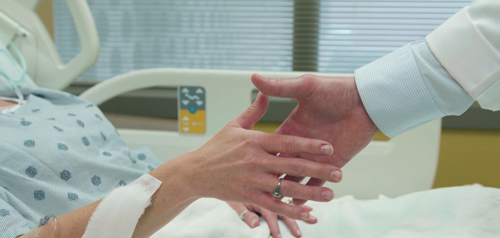
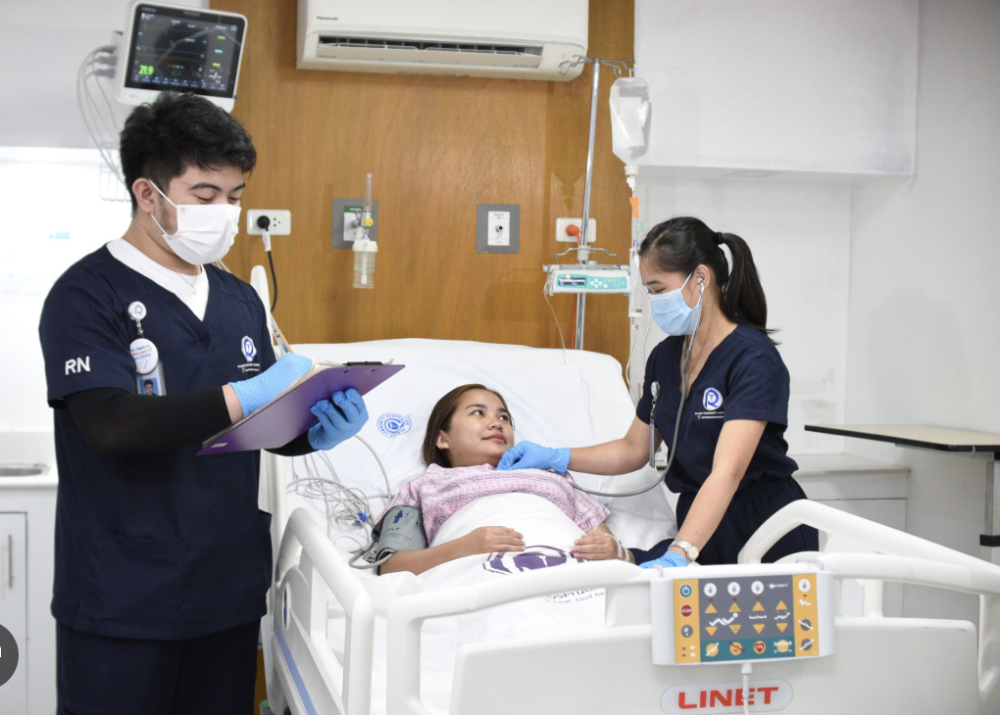
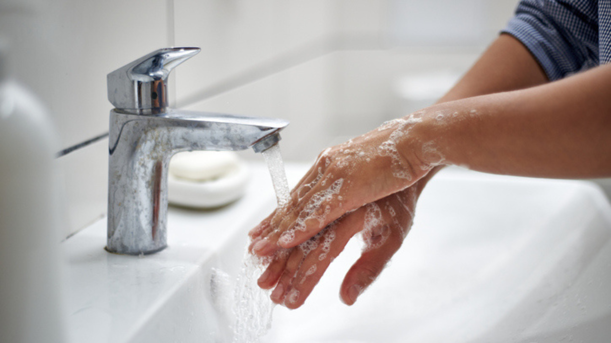
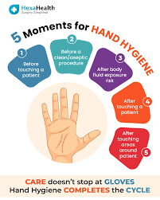

YouTube
▶
A dedicated learning portal for healthcare students and workers on the science, practice, and importance of proper hand hygiene in clinical settings.


In healthcare settings like St. Therese de Lisieux Women and Children Medical Center, patients — especially newborns and children — often have vulnerable immune systems. A single lapse in hand hygiene can lead to life-threatening hospital-acquired infections (HAIs).
This portal was built to make hand hygiene education accessible, engaging, and effective for nursing students and healthcare professionals alike.

Understand why hands are the primary vehicle for pathogen transmission and how proper technique breaks the chain of infection.
Read module
Explore the five critical moments when healthcare workers must perform hand hygiene to protect patients and themselves.
Read moduleLearn when to use ABHR versus soap and water, and understand the science of how each method eliminates pathogens.
Read moduleWatch curated educational videos on hand hygiene techniques, infection control, and WHO guidelines.
Newborns and young children have developing immune systems, making them especially susceptible to hospital-acquired infections.
Proper hand hygiene protects nurses and doctors from contracting and spreading pathogens between patient encounters.
Hospital-acquired infections can be reduced by up to 50% simply through consistent, proper hand hygiene compliance.
Hand hygiene is embedded in nursing standards of care and is a core component of every nurse's duty of practice.